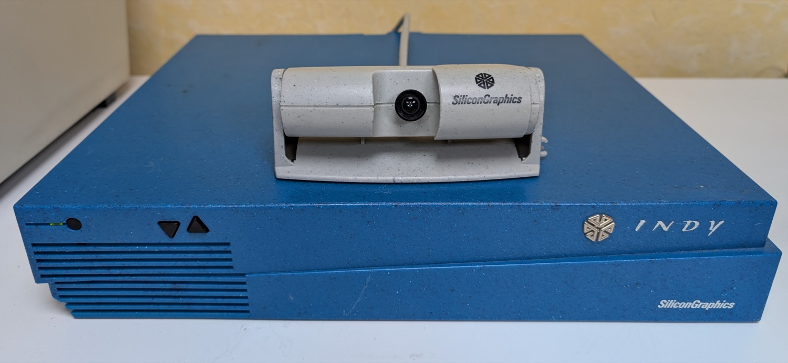
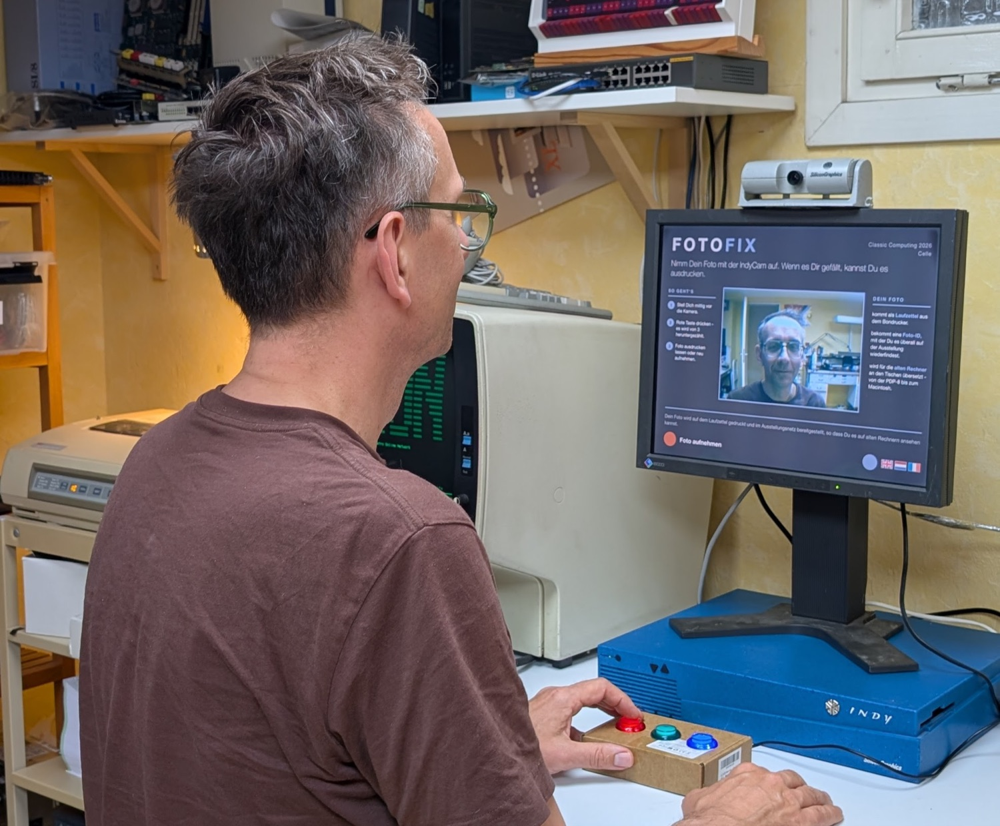
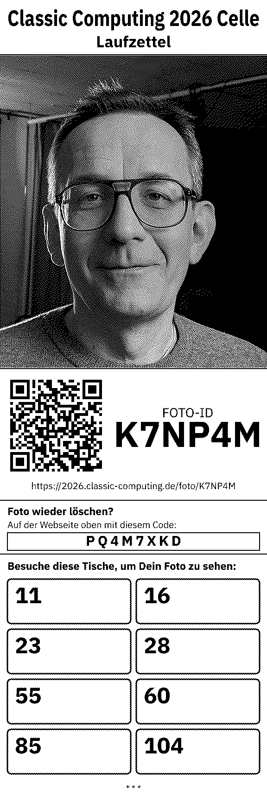
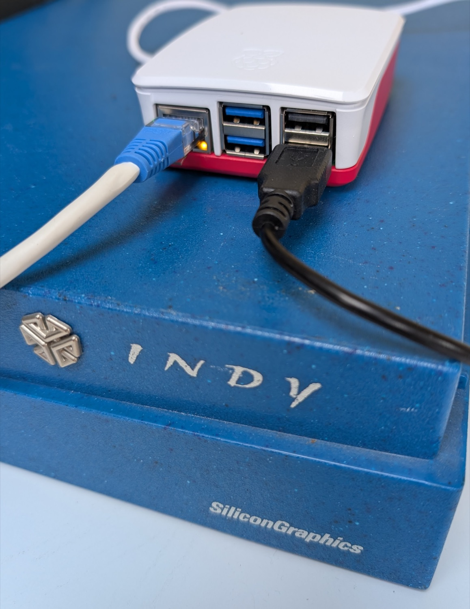
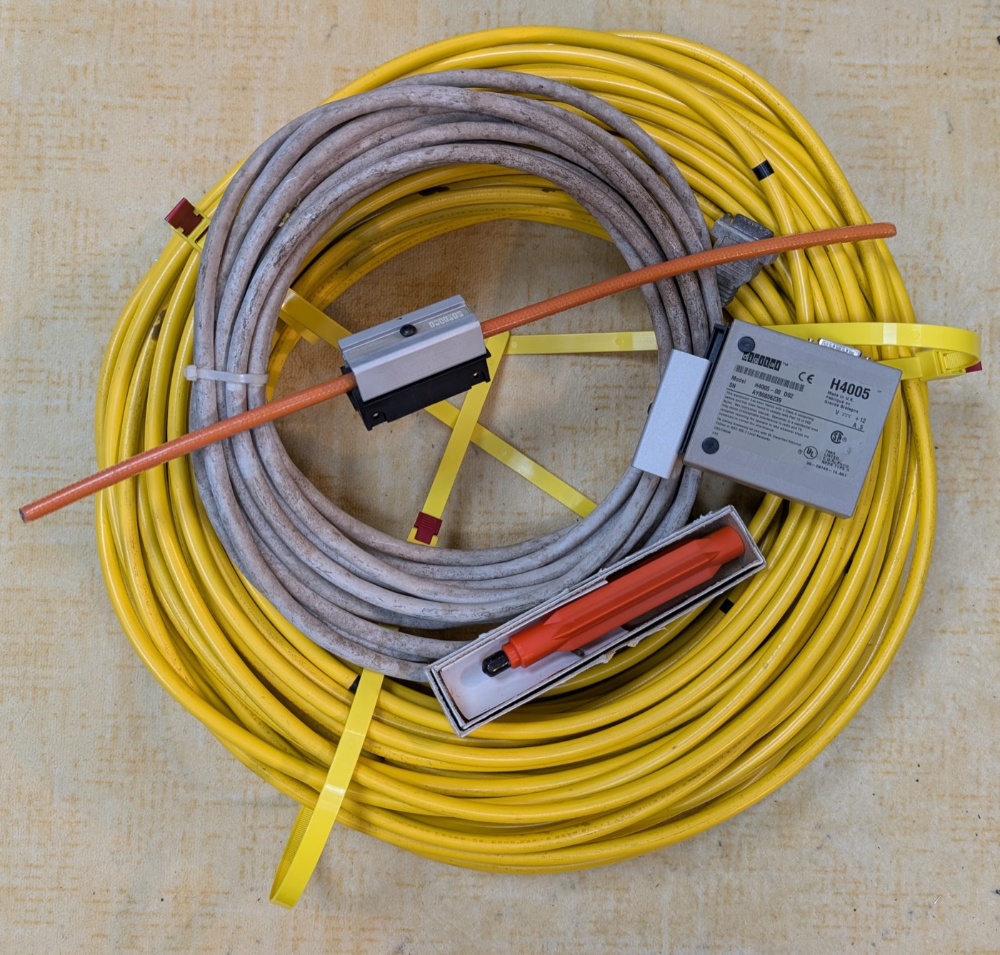
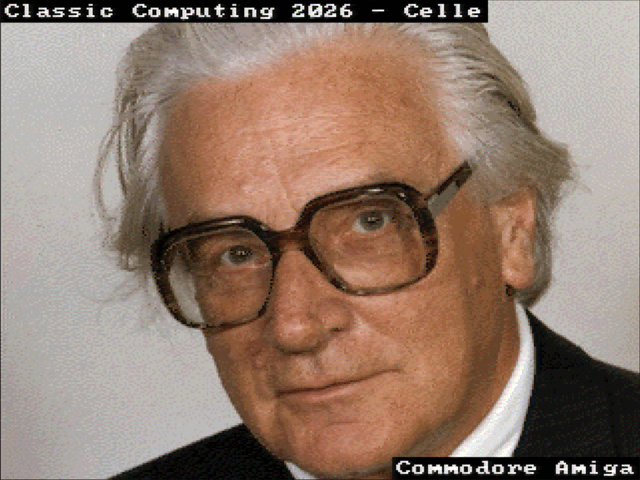
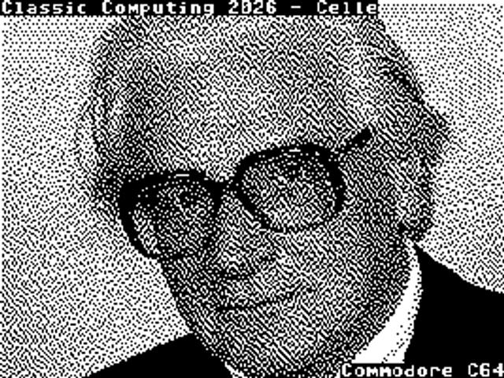
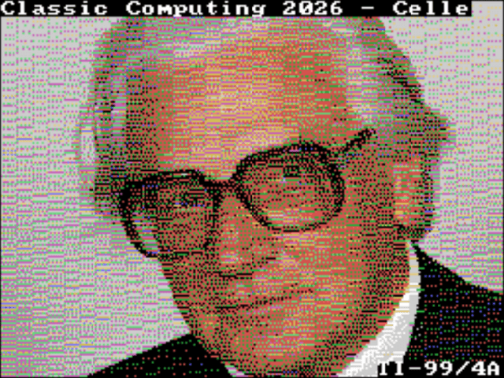
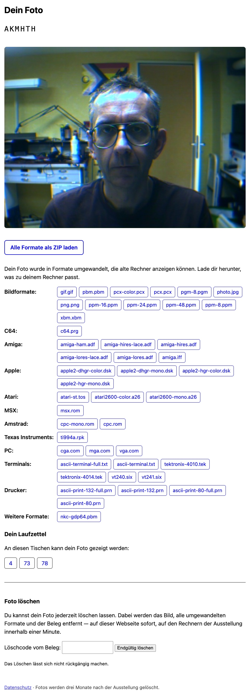
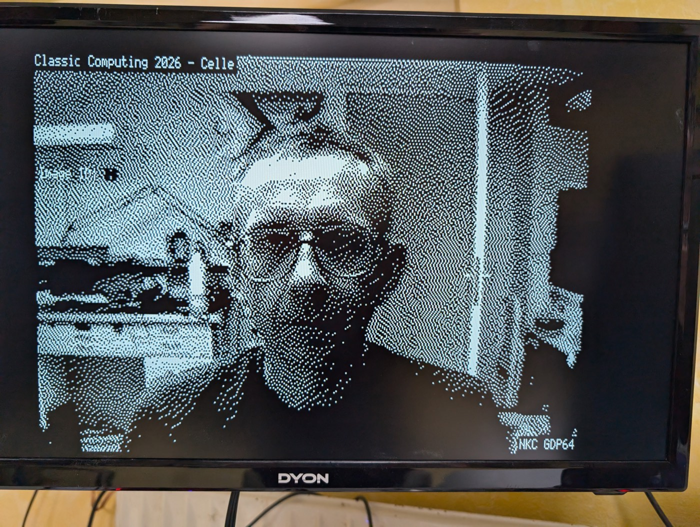

<!--
Copied from the fotofix repository, exhibitor-docs/praesentation.html, by
exhibitor-docs/sync-pages.mjs. Edit it there — an edit made here is lost
the next time the two are brought back into step.
-->
<meta charset="utf-8">
<title>FotoFix für Aussteller</title>
<style>
  :root {
    --ink: #0e141b;
    --panel: #17212b;
    --panel-2: #1d2935;
    --line: #2b3947;
    --text: #e9eef2;
    --muted: #8ca0ac;
    --indy: #4fa8d8;
    --indy-dim: #2e6f96;
    --red: #e0584c;
    --green: #5cb87a;
    --paper: #f6f3eb;
    --paper-ink: #20201c;
    --display: "Futura", "Avenir Next", "Helvetica Neue", sans-serif;
    --body: "Avenir Next", "Helvetica Neue", "Segoe UI", sans-serif;
    --mono: "SF Mono", "Menlo", "Consolas", monospace;
  }
  * { margin: 0; padding: 0; box-sizing: border-box; }
  html, body {
    background: var(--ink); color: var(--text); font-family: var(--body);
  }
  body { font-size: clamp(15px, 1.35vw, 21px); line-height: 1.5; }

  .slide {
    display: none;
    min-height: 100svh;
    padding: 3.6rem 6vw 4.2rem;
    flex-direction: column;
    background: var(--ink);
  }
  .slide.current { display: flex; }

  .eyebrow {
    font-family: var(--display);
    font-size: 0.72em;
    letter-spacing: 0.18em;
    text-transform: uppercase;
    color: var(--indy);
    margin-bottom: 1.1rem;
  }
  .eyebrow .no { color: var(--muted); }
  h1, h2 {
    font-family: var(--display);
    font-weight: 600;
    text-wrap: balance;
    line-height: 1.12;
  }
  h1 { font-size: 3.4em; letter-spacing: 0.01em; }
  h2 { font-size: 2.1em; margin-bottom: 1.6rem; }
  h3 {
    font-family: var(--display); font-weight: 600;
    font-size: 1.05em; margin-bottom: 0.4rem;
  }
  p  { max-width: 34em; }
  .lead { font-size: 1.18em; color: var(--text); max-width: 30em; }
  .muted { color: var(--muted); }
  .accent { color: var(--indy); }
  .red { color: var(--red); }
  code, .id {
    font-family: var(--mono);
    font-size: 0.92em;
    background: var(--panel);
    border: 1px solid var(--line);
    border-radius: 4px;
    padding: 0.08em 0.4em;
    white-space: nowrap;
  }

  .cols { display: grid; gap: 2.5rem; flex: 1; align-content: start; }
  .cols.c2 { grid-template-columns: 3fr 2fr; }
  .cols.c2e { grid-template-columns: 1fr 1fr; }
  .cols.c3 { grid-template-columns: 1fr 1fr 1fr; }

  ul.plain { list-style: none; }
  ul.plain li {
    padding-left: 1.4em; position: relative;
    margin-bottom: 0.55em; max-width: 32em;
  }
  ul.plain li::before {
    content: "▸"; position: absolute; left: 0; color: var(--indy);
  }
  ol.steps { list-style: none; counter-reset: s; }
  ol.steps li {
    counter-increment: s;
    position: relative;
    padding-left: 2.8em;
    margin-bottom: 0.9em; max-width: 34em;
  }
  ol.steps li::before {
    content: counter(s);
    position: absolute; left: 0; top: 0.15em;
    font-family: var(--mono); font-size: 0.85em; text-align: center;
    color: var(--indy); border: 1px solid var(--indy-dim); border-radius: 50%;
    width: 1.9em; height: 1.9em; line-height: 1.8em;
  }

  table { border-collapse: collapse; font-size: 0.95em; }
  th, td {
    text-align: left; padding: 0.5em 1.4em 0.5em 0;
    border-bottom: 1px solid var(--line); vertical-align: top;
  }
  th {
    font-family: var(--display); font-size: 0.78em;
    letter-spacing: 0.12em; text-transform: uppercase;
    color: var(--muted); font-weight: 600;
  }
  td code { background: var(--panel); }

  /* Fotovorschlag: dashed Indy-blue frame. Screenshot: solid muted frame. */
  .foto, .shot {
    border-radius: 6px;
    padding: 1.1rem 1.3rem;
    font-size: 0.85em;
    align-self: start;
  }
  .foto {
    border: 2px dashed var(--indy-dim);
    background: color-mix(in srgb, var(--indy) 6%, transparent);
  }
  .shot { border: 1px solid var(--line); background: var(--panel); }
  .foto .tag, .shot .tag {
    font-family: var(--display); font-size: 0.8em; font-weight: 600;
    letter-spacing: 0.16em; text-transform: uppercase;
    display: block; margin-bottom: 0.5em;
  }
  .foto .tag { color: var(--indy); }
  .shot .tag { color: var(--muted); }
  .foto p, .shot p { color: var(--text); max-width: none; }
  .foto p + p, .shot p + p { margin-top: 0.5em; }
  .foto .why, .shot .why { color: var(--muted); font-size: 0.92em; }
  .stack { display: grid; gap: 1.2rem; align-content: start; }
  /* Für Folien, die viele Karten tragen. */
  .stack.dicht { gap: 0.6rem; }
  .dicht .card { padding: 0.6rem 1.1rem; }
  .dicht .card p { font-size: 0.88em; }

  /* Aufnahmen. Breite und Höhe sind beide gedeckelt, Breite und Höhe stehen
     auf auto — so wählt der Browser die größte Darstellung, die in Spalte und
     Folie passt, und behält das Seitenverhältnis. */
  figure.photo { margin: 0; align-self: start; }
  figure.photo img {
    display: block;
    max-width: 100%; max-height: 55svh;
    width: auto; height: auto;
    border-radius: 6px;
  }
  figure.photo figcaption {
    font-size: 0.8em; color: var(--muted);
    margin-top: 0.6em; max-width: 30em;
  }
  /* Beispielbilder aus dem Automaten, drei nebeneinander. Drei 4:3-Kacheln
     sind vier Kachelhöhen breit — die Breitengrenze in svh hält die Reihe
     also auch auf flachen Bildschirmen in der Folie. */
  .samples {
    display: grid; grid-template-columns: repeat(3, 1fr); gap: 0.6rem;
  }
  .samples.reihe { width: min(100%, 112svh); }
  .samples img { border-radius: 3px; }

  .card {
    background: var(--panel); border: 1px solid var(--line); border-radius: 6px;
    padding: 1.2rem 1.4rem;
  }
  .card h3 { color: var(--indy); }
  .card p { font-size: 0.92em; max-width: none; }

  pre.term {
    font-family: var(--mono); font-size: 0.82em; line-height: 1.6;
    background: #0a0f14; border: 1px solid var(--line); border-radius: 6px;
    padding: 1.1rem 1.3rem; overflow-x: auto; color: #cfe3ee;
  }
  pre.term .p { color: var(--green); }
  pre.term .c { color: var(--muted); }

  .hochformat {
    display: flex; gap: 3rem; flex: 1; min-height: 0; align-items: stretch;
  }
  /* Nur das hohe Bild an der Kante, nicht Bilder im Textteil daneben. */
  .hochformat > img {
    height: 100%; max-height: 62svh; width: auto; max-width: 100%;
    border-radius: 3px;
    box-shadow: 0 8px 30px rgba(0,0,0,0.5);
  }

  .title-slide { position: relative; overflow: hidden; }
  .title-slide .dither {
    position: absolute; inset: auto 0 0 0; height: 9rem; pointer-events: none;
    background-image:
      radial-gradient(circle, var(--indy-dim) 1px, transparent 1.4px);
    background-size: 7px 7px;
    mask-image: linear-gradient(to top, rgba(0,0,0,0.55), transparent);
    -webkit-mask-image: linear-gradient(to top, rgba(0,0,0,0.55), transparent);
  }
  .title-slide .id-line {
    font-family: var(--mono); color: var(--muted); margin-top: 2.2rem;
  }
  .title-slide .id-line b { color: var(--indy); font-weight: 400; }

  .kicker {
    font-family: var(--display); font-size: 1.35em; font-weight: 600;
    color: var(--text); max-width: 24em; text-wrap: balance; line-height: 1.3;
  }
  .give-get {
    display: grid; grid-template-columns: 1fr 1fr;
    gap: 2.5rem; margin-top: 2.5rem;
  }
  .give-get .card { padding: 1.8rem 2rem; }
  .give-get h3 { font-size: 1.3em; margin-bottom: 0.8rem; }
  .give-get .you h3 { color: var(--red); }
  .give-get .we h3 { color: var(--indy); }

  footer {
    position: fixed; inset: auto 0 0 0;
    display: flex; justify-content: space-between; align-items: center;
    padding: 0.7rem 2rem;
    font-family: var(--mono); font-size: 0.72rem; color: var(--muted);
    pointer-events: none;
  }
  button:focus-visible, a:focus-visible {
    outline: 2px solid var(--indy); outline-offset: 2px;
  }

  @media (max-width: 900px) {
    .cols.c2, .cols.c2e, .cols.c3, .give-get { grid-template-columns: 1fr; }
    .hochformat { flex-direction: column; }
    .hochformat > img { max-height: 50svh; }
    figure.photo img { max-height: 42svh !important; }
    h1 { font-size: 2.4em; }
  }
  @media print {
    .slide {
      display: flex !important; min-height: auto;
      page-break-after: always; padding: 3rem 4rem;
    }
    footer { display: none; }
    figure.photo img { max-height: 11cm !important; }
    body { font-size: 13px; }
  }
</style>

<!-- 1 · Titel -->
<section class="slide title-slide">
  <div class="eyebrow">Classic Computing 2026 · Celle</div>
  <h1>FotoFix</h1>
  <p class="lead" style="margin-top:1.2rem">
    Ein Kunstprojekt auf der CC 2026<br>
    Besucher fotografieren sich mit der Indy<br>
    Euer Exponat zeigt die Bilder.
  </p>
  <p class="id-line">
    56 Formate · FTP · SMB · DECnet · seriell
  </p>
  <figure class="photo" style="margin-top:2.6rem">
    
  </figure>
  <div class="dither"></div>
</section>

<!-- 2 · Der Automat -->
<section class="slide">
  <div class="eyebrow">Worum geht es <span class="no">· 2</span></div>
  <h2>Der Automat</h2>
  <div class="cols c2e">
    <div>
      <ol class="steps">
        <li>
          Besucher stellen sich vor die Indy - der Sucher zeigt die Aufnahme.
        </li>
        <li>
          <span class="red">Rote Taste:</span>
          Countdown 3&nbsp;·&nbsp;2&nbsp;·&nbsp;1 mit Ton, das Bild friert ein.
        </li>
        <li>
          <span style="color:var(--green)">Grüne Taste:</span>
          Foto behalten - der Laufzettel rollt aus dem Bondrucker.
        </li>
      </ol>
      <p class="muted" style="margin-top:1.2rem">
        SGI Indy mit IndyCam von 1993, Aufnahme 640&nbsp;×&nbsp;480.
        Selbstbedienung in vier Sprachen; nach jedem Foto steht wieder
        Deutsch da.
      </p>
      <p class="muted" style="margin-top:1rem">
        Zwischen den Besuchern zeigt der Sucher bekannte Gesichter,
        umgerechnet in die Formate der alten Rechner.
      </p>
    </div>
    <figure class="photo">
      
      <figcaption>
        Der Prototyp im Betrieb - der Sucher erklärt sich selbst, die Hand
        liegt auf der roten Taste.
      </figcaption>
    </figure>
  </div>
</section>

<!-- 3 · Der Laufzettel -->
<section class="slide">
  <div class="eyebrow">Worum geht es <span class="no">· 3</span></div>
  <h2>Der Laufzettel</h2>
  <div class="hochformat">
    
    <div>
      <ul class="plain">
        <li>Das Foto, gedithert für Thermopapier</li>
        <li>QR-Code zur eigenen Foto-Seite im Web</li>
        <li>
          Die <strong>Foto-ID</strong> besteht aus sechs Zeichen, z.&nbsp;B.
          <span class="id">K7NP4M</span> und ist der Schlüssel zu
          allem Weiteren
        </li>
        <li>
          Der <strong>Code</strong>, mit dem das Foto wieder gelöscht
          werden kann
        </li>
        <li>Kästchen mit <strong>Tischnummern</strong> - dazu gleich mehr</li>
      </ul>
      <p class="muted" style="margin-top:1.4rem">
        80&nbsp;mm Thermopapier auf Kassendrucker. Der Ausdruck dauert
        wenige Sekunden.
      </p>
      <!-- Der Laufzettel links ist der Render aus print/, eingebettet aus
           laufzettel-render.png. Ein Foto eines echten Ausdrucks kann ihn
           später ersetzen. -->
    </div>
  </div>
</section>

<!-- 4 · Die Idee -->
<section class="slide">
  <div class="eyebrow">Worum geht es <span class="no">· 4</span></div>
  <h2>Die Idee: der Laufzettel schickt Besucher an Eure Tische</h2>
  <div class="cols c2">
    <div>
      <ol class="steps">
        <li>
          Besucher fotografieren sich am Eingang und bekommen den Laufzettel.
        </li>
        <li>
          Die Tischnummern darauf sind Exponate, die das Foto anzeigen
          können - die Besucher gehen hin und tippen ihre ID ein oder
          geben sie dem Aussteller.
        </li>
        <li>
          Für jedes besuchte Exponat gibt es einen <strong>Stempel</strong>
          ins Kästchen - jeder Aussteller hat seinen eigenen.
        </li>
        <li>
          Pro Stempel ein <strong>Gummibärchen (?)</strong> am Infotresen.
        </li>
      </ol>
    </div>
    <div class="stack">
      <p class="kicker">
        Das Projekt bringt Publikum an Euren Tisch - mit einem Grund, zu
        bleiben.
      </p>
      <p class="muted">
        Stempel fertigen wir Ende September an und bringen sie zur CC
        mit.  Ihr könnt gern Euren eigenen Logo-Wunsch anbringen.
      </p>
      <!-- Fotovorschläge, fehlen noch: (1) ein gestempelter Laufzettel neben
           zwei, drei Stempeln mit Logo, flach fotografiert; Material dafür
           liegt in vortrag/stempel-drei.jpg und stempel-abdrucke.jpg.
           (2) das Gummibärchen-Glas am Infotresen, davor ein eingelöster
           Laufzettel. -->
    </div>
  </div>
</section>

<!-- 5 · Der Server -->
<section class="slide">
  <div class="eyebrow">Was wir liefern <span class="no">· 5</span></div>
  <h2>Der Server: eine ID, ein Verzeichnis, 56 Formate</h2>
  <div class="cols c2">
    <div>
      <p>
        Ein Raspberry Pi nimmt jedes Foto an, druckt den Laufzettel und
        konvertiert dann automatisch. Jede Foto-ID ist ein Verzeichnis mit
        festen, vorhersagbaren Namen:
      </p>
      <pre class="term" style="margin-top:1.2rem">
K7NP4M/photo.jpg             <span class="c">das Original, 640 × 480</span>
K7NP4M/c64.prg               <span class="c">C64, läuft mit LOAD und RUN</span>
K7NP4M/amiga-ham.adf         <span class="c">bootfähige Amiga-Diskette</span>
K7NP4M/apple2-hgr-color.dsk  <span class="c">bootfähige Apple-II-Diskette</span>
K7NP4M/ascii-terminal.txt    <span class="c">für jedes Terminal</span>
…                            <span class="c">und 52 weitere</span></pre>
      <p class="muted" style="margin-top:1rem">
        Es gibt keine Suche und keinen Index.  Ohne ID kann man keine Fotos
        abrufen.
      </p>
    </div>
    <figure class="photo">
      
      <figcaption>
        Der Server steht auf der Indy: 30 Jahre Abstand, ein Netzwerkkabel.
      </figcaption>
    </figure>
  </div>
</section>

<!-- 6 · Die Zugangswege -->
<section class="slide">
  <div class="eyebrow">Was wir liefern <span class="no">· 6</span></div>
  <h2>Die Zugangswege</h2>
  <div class="cols c2">
    <div>
      <table>
        <tr>
          <th>Protokoll</th>
          <th>Adresse</th>
          <th>Anmeldung</th>
        </tr>
        <tr>
          <td>FTP</td>
          <td><code>fotofix</code>, Port 21</td>
          <td>anonymous, ohne Passwort</td>
        </tr>
        <tr>
          <td>HTTP</td>
          <td><code>http://fotofix.classic-computing.de/K7NP4M/</code></td>
          <td>keine</td>
        </tr>
        <tr>
          <td>SMB</td>
          <td><code>\\FOTOFIX\fotos</code></td>
          <td>Gast</td>
        </tr>
        <tr>
          <td>DECnet</td>
          <td><code>FOTOFX::"K7NP4M/photo.jpg"</code>, Knoten 1001</td>
          <td>beliebig</td>
        </tr>
        <tr>
          <td>Seriell</td>
          <td>Terminalserver am Tisch</td>
          <td>Kermit, X/Y/ZModem</td>
        </tr>
      </table>
      <p class="muted" style="margin-top:1.4rem">
        Bereitgestellt im CC-Netz: 10BASE5-Backbone, 10BASE-T- und
        WLAN-Segmente sowie serielle Schnittstellen. Der Name gilt auch von
        zu Hause aus - über HTTP aus dem Internet, für die übrigen Wege im
        Retrostar-Netz.
      </p>
      <!-- Fotovorschlag, fehlt noch: ein Terminalserver oder Modem-Turm im
           Betrieb, Kabel sichtbar gesteckt. -->
    </div>
    <figure class="photo">
      
      <figcaption>
        Das Backbone ist selbst ein Exponat: 10BASE5, Transceiver H4005,
        Bohrer für die Vampirklemme.
      </figcaption>
    </figure>
  </div>
</section>

<!-- 7 · Die Formate -->
<section class="slide">
  <div class="eyebrow">Was wir liefern <span class="no">· 7</span></div>
  <h2>Ein Gesicht, viele Systeme</h2>
  <p style="max-width:44em">
    Die Zielmaschine braucht kein Bildprogramm - laden, starten, fertig.
  </p>
  <div class="cols c3"
       style="margin-top:1.3rem; font-size:0.92em; flex:0 0 auto">
    <ul class="plain">
      <li>C64 - <code>.prg</code></li>
      <li>MS-DOS - <code>.com</code> für CGA, Hercules, VGA</li>
      <li>Atari ST - <code>.tos</code></li>
      <li>Amiga - <code>.iff</code> + 5 bootfähige <code>.adf</code></li>
      <li>Apple II - bootfähige <code>.dsk</code></li>
    </ul>
    <ul class="plain">
      <li>TI-99/4A - Modul <code>.rpk</code></li>
      <li>Atari 2600 - Cartridge <code>.a26</code></li>
      <li>MSX - Cartridge <code>.rom</code></li>
      <li>Amstrad/Schneider CPC - <code>.rom</code></li>
      <li>NKC mit GDP64 - <code>.pbm</code> für KERMIMG</li>
    </ul>
    <ul class="plain">
      <li>ASCII-Art - Terminal &amp; Zeilendrucker</li>
      <li>Tektronix 4010/4014 - Vektorgrafik</li>
      <li>VT240/VT241 - Sixel</li>
      <li>Minitel 1B - Télétel-Seite <code>.vdt</code></li>
      <li>Bildschirmtext - CEPT-Seite <code>.cept</code></li>
    </ul>
  </div>
  <p class="muted" style="margin-top:1.1rem; max-width:52em">
    Dazu die Austauschformate für Maschinen mit eigenem Bildlader: PNG, GIF,
    PCX, PPM/PGM/PBM, XBM - und für den NEC Pinwriter P6 ein fertiger
    Druckauftrag auf A4. Fehlt eines? Sagt uns, was Eure Maschine liest -
    die Konvertierung baut das Projekt.
  </p>
  <figure class="photo" style="margin-top:1.4rem">
    <div class="samples reihe">
      
      
      
    </div>
    <figcaption>Jedes Bild trägt Bildunterschrift und Systemnamen.</figcaption>
  </figure>
</section>

<!-- 8 · Website & Datenschutz -->
<section class="slide">
  <div class="eyebrow">Was wir liefern <span class="no">· 8</span></div>
  <h2>Website und Datenschutz</h2>
  <div class="hochformat">
    
    <div>
      <ul class="plain">
        <li>
          Der QR-Code führt zur eigenen Foto-Seite: das Bild, alle Downloads,
          die Tische des Laufzettels
        </li>
        <li>
          Besucher können ihr Foto dort <strong>selbst löschen</strong> - der
          Lösch-Code steht auf dem Laufzettel
        </li>
        <li>
          Fotos liegen ausschließlich auf dem Ausstellungs-Server; die Indy
          löscht jede Aufnahme nach der Übertragung
        </li>
        <li>
          Drei Monate nach der Ausstellung wird alles gelöscht, auch ohne
          Zutun der Besucher
        </li>
        <li>
          Datenschutzerklärung unter <code>/foto/datenschutz</code>, verlinkt
          auf jeder Seite
        </li>
      </ul>
      <p class="kicker" style="margin-top:1.6rem">
        Die Datenschutz-Frage am Tisch ist beantwortet, bevor sie gestellt
        wird.
      </p>
      <p class="muted" style="margin-top:1rem">
        Ihr müsst nichts speichern, nichts weitergeben und nichts löschen -
        auf Eurem Exponat liegt nur das Bild, das gerade angezeigt wird.
      </p>
    </div>
  </div>
</section>

<!-- 9 · Eure Aufgabe -->
<section class="slide">
  <div class="eyebrow">Mitmachen <span class="no">· 9</span></div>
  <h2>Eure Aufgabe: ID abrufen, Foto zeigen</h2>
  <div class="cols c2">
    <div>
      <p>
        Ein Besucher kommt mit dem Laufzettel an Euren Tisch und nennt seine
        ID. Euer Exponat holt das Foto und zeigt es an - Protokoll und Format
        wählt Ihr passend zur Maschine.
      </p>
      <pre class="term" style="margin-top:1.2rem">
<span class="p">$</span> ftp fotofix
Name: anonymous
<span class="p">ftp></span> get K7NP4M/amiga-ham.adf
<span class="c">… Diskette schreiben, booten - das Foto steht auf dem 1084er</span></pre>
      <p class="muted" style="margin-top:1rem">
        Ihr ruft das Bild ab und zeigt es an. Alles davor - Aufnahme,
        Konvertierung, Verteilung - ist erledigt.
      </p>
      <!-- Fotovorschlag, fehlt noch: über die Schulter, Hände an einer
           Retro-Tastatur, auf dem Bildschirm die eingetippte FTP-Zeile,
           daneben der Laufzettel. -->
    </div>
    <figure class="photo">
      
      <figcaption>
        So sieht das aus: ein NKC mit GDP64 zeigt ein Foto vom Automaten -
        kein Emulator, echte Hardware.
      </figcaption>
    </figure>
  </div>
</section>

<!-- 10 · Beteiligungsstufen und Test -->
<section class="slide">
  <div class="eyebrow">Mitmachen <span class="no">· 10</span></div>
  <h2>Für jedes Exponat ein Weg - und einer zum Üben</h2>
  <div class="cols c2e">
    <div class="stack dicht">
      <div class="card">
        <h3>Maschine im Netz</h3>
        <p>FTP, SMB, HTTP oder DECnet direkt - Foto abrufen und anzeigen.</p>
      </div>
      <div class="card">
        <h3>Maschine mit serieller Schnittstelle</h3>
        <p>
          Über den Terminalserver einwählen, Foto per Kermit oder
          X/Y/ZModem holen.
        </p>
      </div>
      <div class="card">
        <h3>Maschine ohne alles</h3>
        <p>
          Am Tisch eine Diskette oder ein Modul beschreiben -
          <code>.adf</code>, <code>.dsk</code>, <code>.rom</code> booten von
          selbst.
        </p>
      </div>
      <div class="card">
        <h3>Bonus: Exponat mit Drucker</h3>
        <p>Das Foto als Ausdruck mitgeben - ein zweites Andenken.</p>
      </div>
    </div>
    <div class="stack dicht">
      <p>
        Ihr könnt alles von zu Hause aus vor der Ausstellung ausprobieren:
      </p>
      <div class="card">
        <h3>Die Test-ID <code>MUSTER</code></h3>
        <p>
          Ein Beispielfoto in allen Formaten, ab sofort abrufbar unter
          <code>fotofix.classic-computing.de</code>. Damit baut Ihr Euren
          Abrufweg, bevor der erste Besucher vor der Kamera steht.
        </p>
      </div>
      <div class="card">
        <h3>Der Automat im Browser</h3>
        <p>
          Die Kamera-Seite in Exhibitron ist die Fotostation als Webseite:
          Foto machen, eigene ID bekommen, alle Formate werden erzeugt.
        </p>
      </div>
      <div class="card">
        <h3>Die serielle Strecke: <code>fotofix-serial</code></h3>
        <p>
          Ihr schließt Euren Retro-Rechner an die serielle
          Schnittstelle eines Internet-fähigen Rechners an, der sich mit
          unserem Bridge-Programm so verhält wie der serielle Port
          auf der CC.  Die Bridge läuft im Browser (Chrome oder
          Firefox) oder unter Linux/Windows/macOS nativ.
        </p>
      </div>
      <!-- Fotovorschläge, fehlen noch: Nullmodemkabel am seriellen Port;
           eine Hand schiebt eine frisch beschriebene 3,5"-Diskette in einen
           Amiga oder Apple II; ein Matrixdrucker beim ASCII-Art-Porträt auf
           Endlospapier; der Heim-Testaufbau auf dem Küchentisch.
           Screenshot, erzeugbar: die Kamera-Seite im Browser und ein Terminal
           mit laufendem fotofix-serial samt Kermit-Übertragung. -->
    </div>
  </div>
</section>

<!-- 11 · Aufruf -->
<section class="slide title-slide">
  <div class="eyebrow">Mitmachen <span class="no">· 11</span></div>
  <h2 style="font-size:2.4em">Macht Euer Exponat zum Fotorahmen.</h2>
  <div class="give-get">
    <div class="card you">
      <h3>Ihr bringt</h3>
      <p>Euer Exponat und eine Abruf-Idee.</p>
    </div>
    <div class="card we">
      <h3>Wir liefern</h3>
      <p>
        Automat, Server, Netz, Euer Format, die Testumgebung und die
        Besucher mit dem Laufzettel in der Hand.
      </p>
    </div>
  </div>
  <div class="cols c2e" style="margin-top:2.4rem; flex:0 0 auto">
    <div>
      <h3 class="accent">Anmeldung</h3>
      <ul class="plain">
        <li>Tischnummer für den Laufzettel melden</li>
        <li>
          Stempel bestellen, gern mit eigenem Logo
        </li>
        <li>Anmeldeschluss: <span class="muted">25. September 2026</span></li>
      </ul>
    </div>
    <div>
      <h3 class="accent">Kontakt</h3>
      <p class="muted">hans@huebner.org</p>
      <p class="id-line" style="margin-top:1.4rem">Fragen?</p>
    </div>
  </div>
  <div class="dither"></div>
</section>

<footer>
  <span>FotoFix · Classic Computing 2026</span>
  <span id="counter">1 / 12</span>
</footer>

<script>
  const slides = [...document.querySelectorAll('.slide')];
  const counter = document.getElementById('counter');
  let i = Math.min(
    slides.length - 1,
    Math.max(0, (parseInt(location.hash.slice(1), 10) || 1) - 1)
  );
  function show(n) {
    i = Math.min(slides.length - 1, Math.max(0, n));
    slides.forEach((s, k) => s.classList.toggle('current', k === i));
    counter.textContent = (i + 1) + ' / ' + slides.length;
    history.replaceState(null, '', '#' + (i + 1));
  }
  addEventListener('keydown', e => {
    if (e.key === 'ArrowRight' || e.key === 'PageDown' || e.key === ' ') {
      e.preventDefault(); show(i + 1);
    }
    else if (e.key === 'ArrowLeft' || e.key === 'PageUp') {
      e.preventDefault(); show(i - 1);
    }
    else if (e.key === 'Home') show(0);
    else if (e.key === 'End') show(slides.length - 1);
  });
  addEventListener('click', e => {
    if (e.target.closest('a, button, code, pre')) return;
    show(e.clientX > innerWidth / 2 ? i + 1 : i - 1);
  });
  show(i);
</script>
